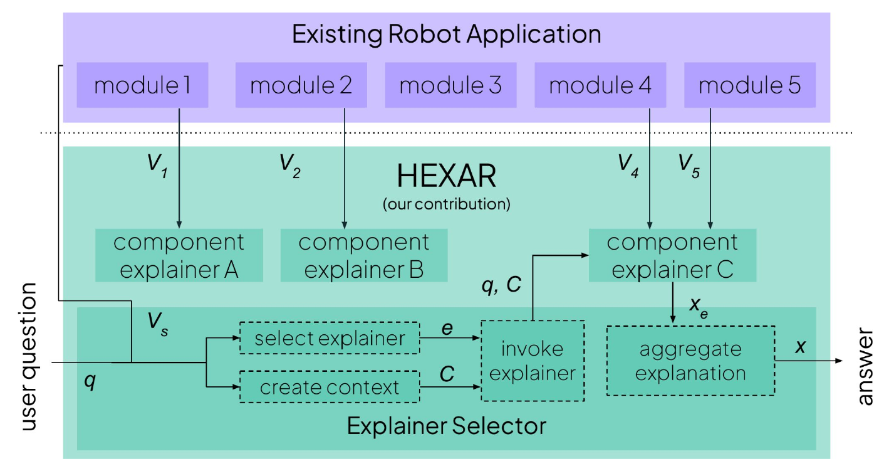
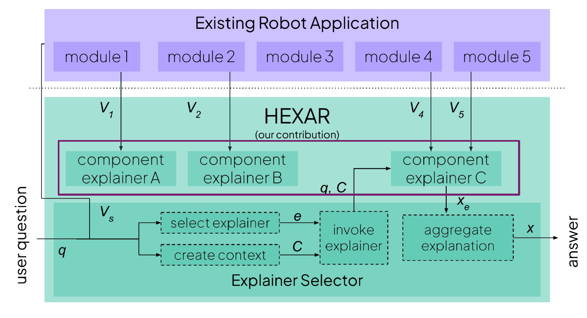
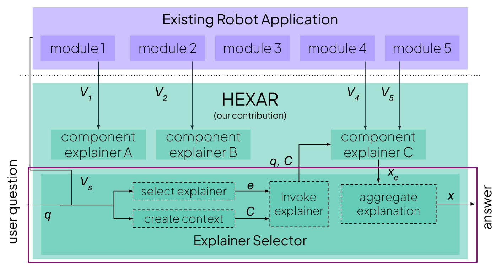
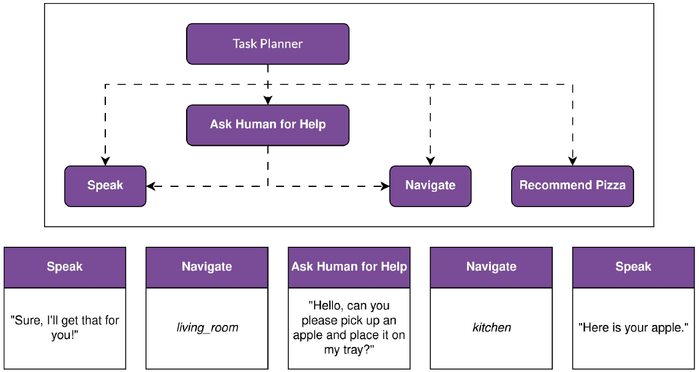
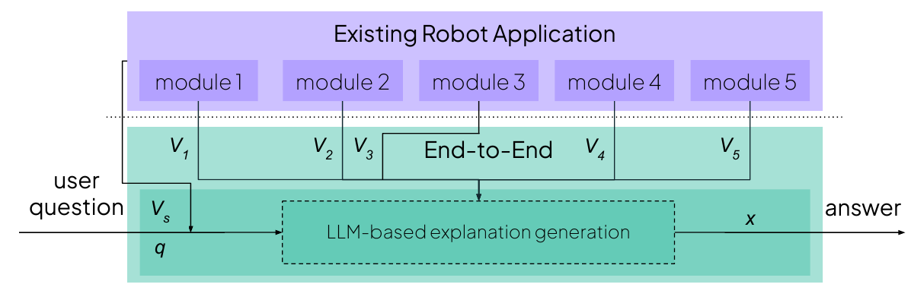
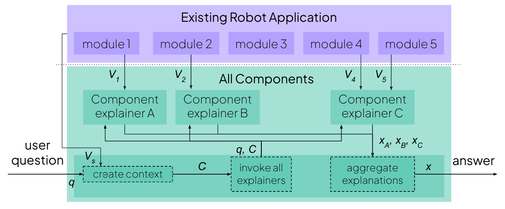
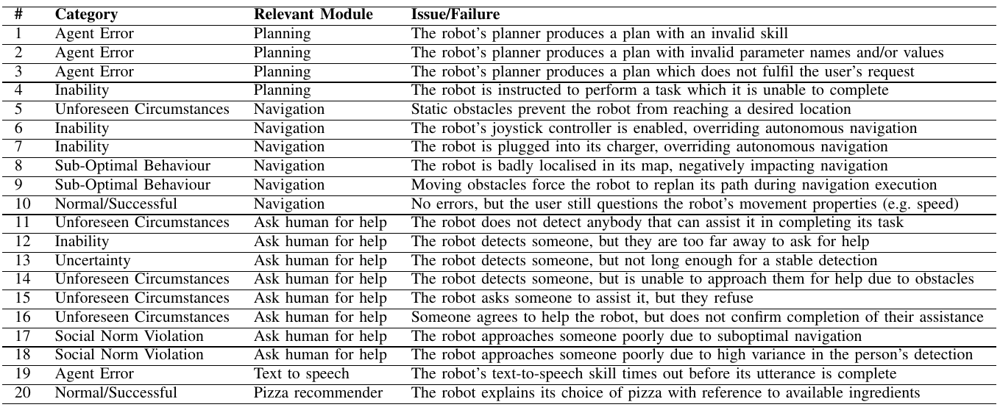
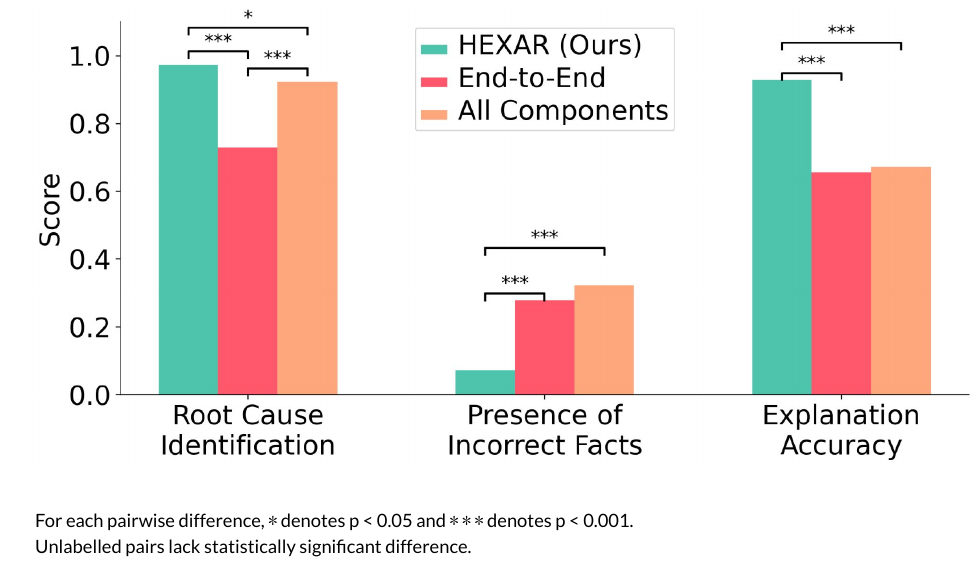
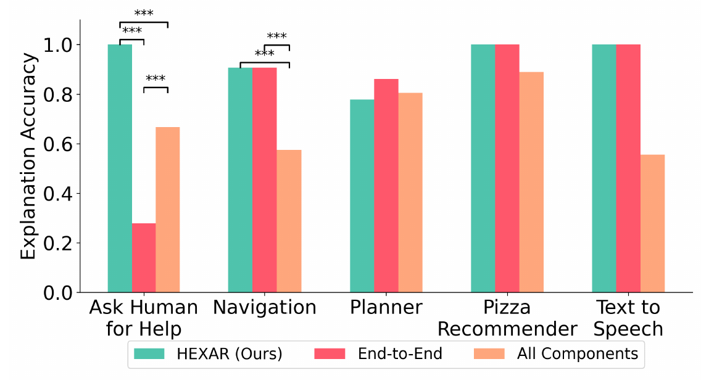

Abstract
As robotic systems become increasingly complex, the need for explainable decision-making becomes critical. Existing explainability approaches in robotics typically either focus on individual modules, which can be difficult to query from the perspective of high-level behaviour, or employ monolithic approaches, which do not exploit the modularity of robotic architectures. We present HEXAR (Hierarchical EXplainability Architecture for Robots), a novel framework that provides a plug-in, hierarchical approach to generate explanations about robotic systems. HEXAR consists of specialised component explainers using diverse explanation techniques (e.g., LLM-based reasoning, causal models, feature importance, etc) tailored to specific robot modules, orchestrated by an explainer selector that chooses the most appropriate one for a given query. We implement and evaluate HEXAR on a TIAGo robot performing assistive tasks in a home environment, comparing it against end-to-end and aggregated baseline approaches across 180 scenario-query variations. We observe that HEXAR significantly outperforms baselines in root cause identification, incorrect information exclusion, and runtime, offering a promising direction for transparent autonomous systems.
Existing explainability approaches do not leverage robot architectures or target only specific robot modules.

HEXAR exploits the modularity of robotic architectures to provide explanations.

HEXAR uses component explainers that leverage diverse explanation techniques tailored to specific robot modules.

These component explainers are orchestrated by an explainer selector that chooses the most appropriate one for a given query.

We implement and evaluate HEXAR on a TIAGo robot performing assistive tasks in a home environment.

We compare HEXAR against end-to-end and aggregated baseline approaches.

We compare HEXAR against end-to-end and aggregated baseline approaches.

We evaluate on various scenriois with failures, unexpected behaviours, and sucessful executions.

HEXAR finds root causes more frequently and produces inaccuracy-free explanations more frequently than baselines.

HEXAR performs much better because it can direct user query to appropriate component explainers, which leverage diverse explanation techniques tailored to specific robot modules.
BibTeX
@inproceedings{love2026hexar,
title={{HEXAR}: A Hierarchical Explainability Architecture for Robots},
author={Love, Tamlin and Gebell{\'\i}, Ferran and Pramanick, Pradip and Andriella, Antonio and Aleny{\`a}, Guillem and Garrell, Anais and Ros, Raquel and Rossi, Silvia},
booktitle={2026 IEEE International Conference on Robotics and Automation (ICRA)},
year={2026},
organization={IEEE},
note = {To appear},
archivePrefix = {arXiv},
eprint = {2601.03070},
primaryClass = {cs.RO}
}